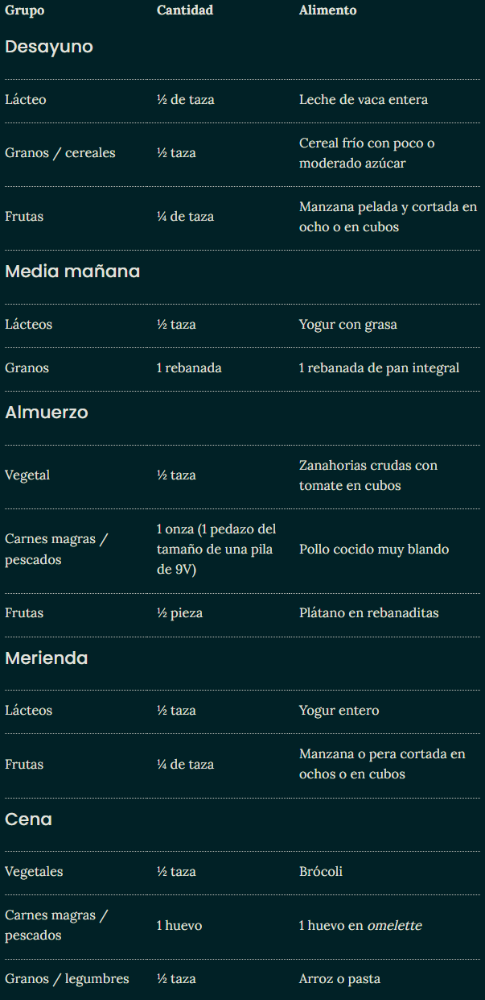

Tu niño ya puede comer casi de todo, aunque debes seguir vigilando los pedazos de alimentos pequeños. Para esta edad ya le estará diciendo adiós al biberón, si lo toma, aunque también es posible que le esté costando trabajo dejarlo.
Que pueda comer de todo, no quiere decir que vaya a comer de todo. De hecho, a esta edad no es infrecuente que tu niño sea melindroso para comer. Es posible que la textura de ciertos alimentos sólidos no le guste demasiado o incluso que simplemente se rehúse a comer.
Alimentos que puedes ofrecerle
Aunque ya pueda comer de todo, todavía ten cuidado con las palomitas, uvas, trozos de salchichas y otros alimentos con los que podría atragantarse. Debes estar siempre con él cuando coma.
Aquí puedes ver fotos de la porción adecuada para la edad de tu hijo, en cada uno de los grupos de alimentos.
Escoge entre las siguientes opciones en cada uno de los grupos de alimentos:
Granos, cereales y legumbres: Lentejas, frijoles, garbanzos, guisantes (chícharos), arroz, pasta, tortillas, pan o cualquier otra legumbre o grano, y cereal de desayuno bajo en azúcar.
Vegetales: brócoli, judías verdes (ejotes, habichuelas verdes), lechuga, espinacas, zanahorias, maíz (elote), calabacitas, pimientos o cualquier otro vegetal.
Frutas: manzana, naranja, pera, plátano, durazno, frutas en conserva con poco azúcar o cualquier otra fruta.
Lácteos: leche de vaca entera, yogur entero, queso Cottage entero, quesos blancos.
Carnes magras, pescados y huevos: carne, pollo, pescado (no mariscos), huevo (con clara), queso.
Grasas: para cocinar (si las necesitas) y preferiblemente grasas saludables, como aceites vegetales de oliva o semillas.
Alimentos que puedes ofrecerle
